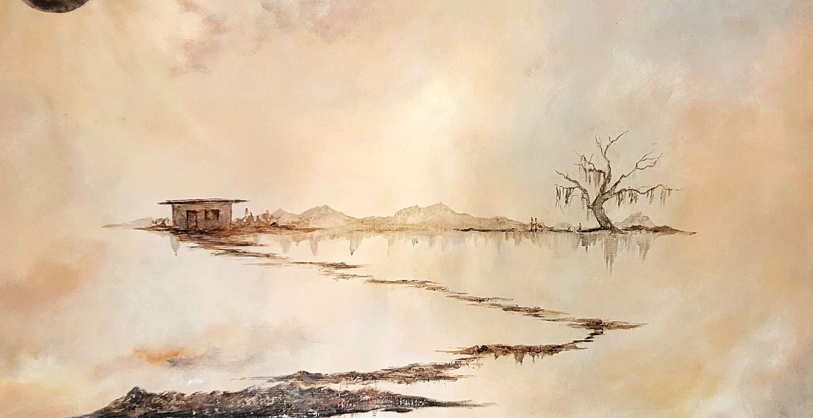
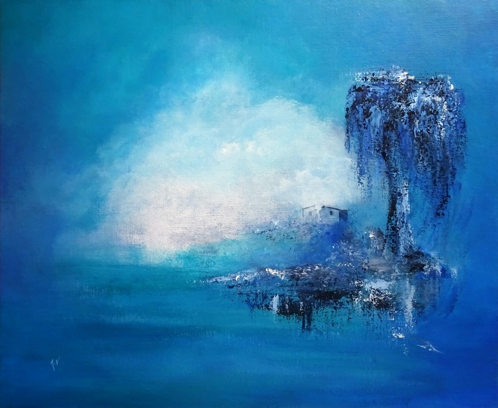
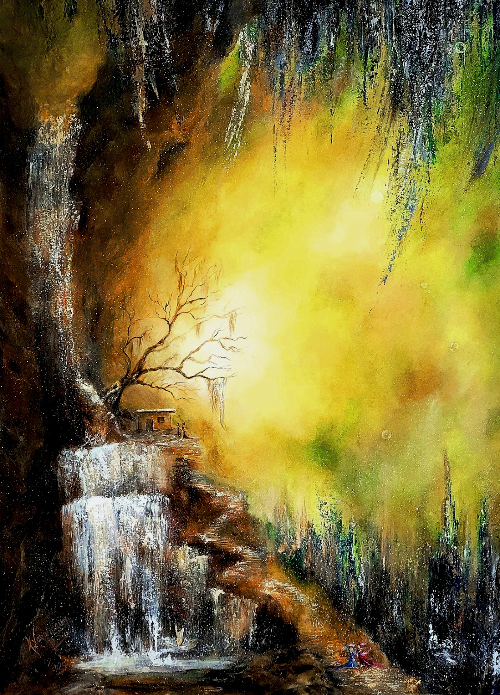
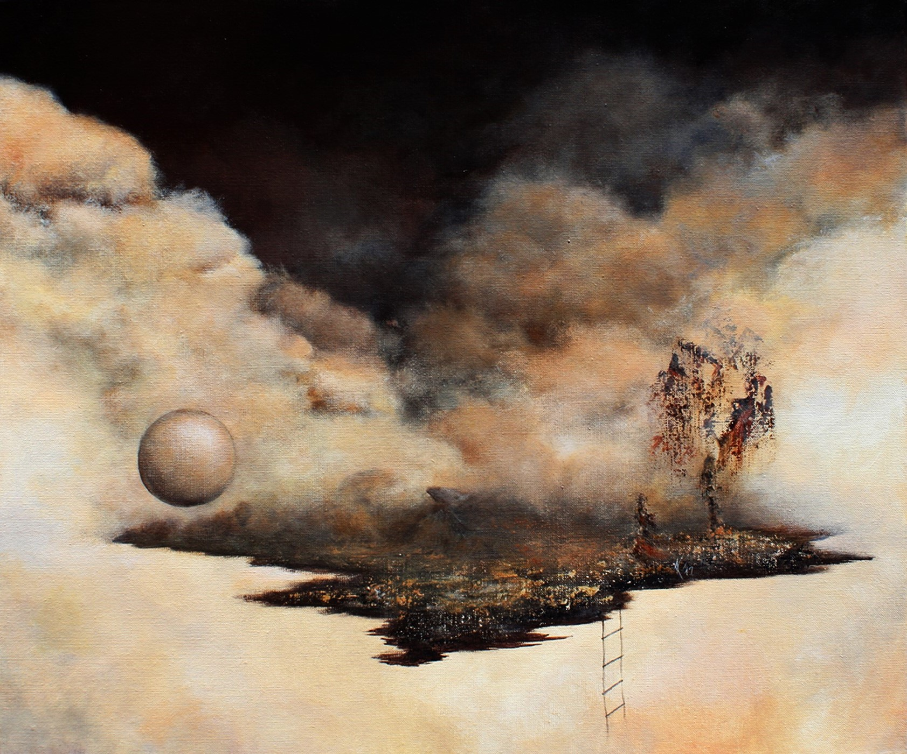
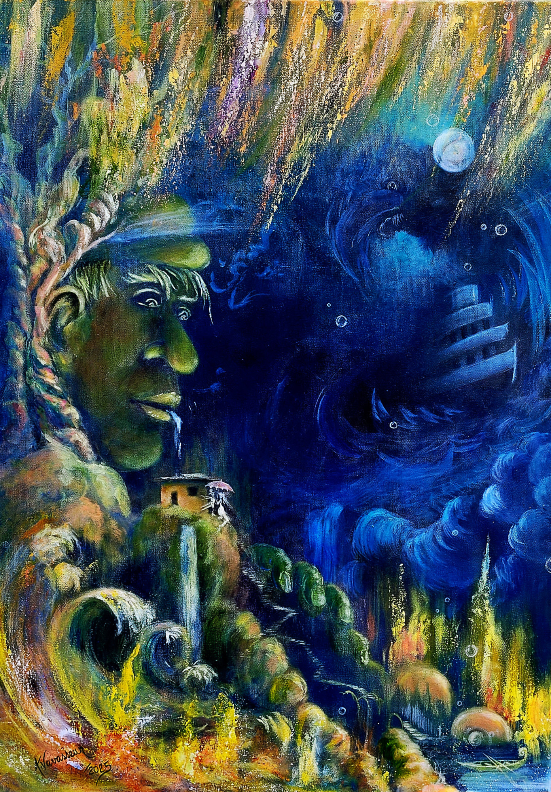
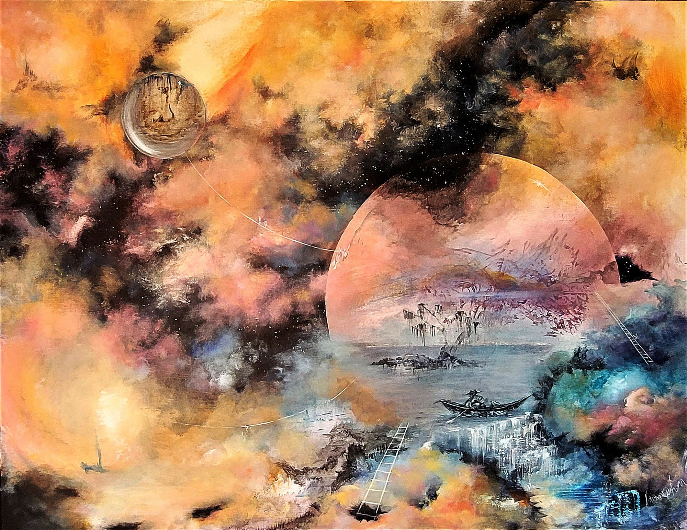
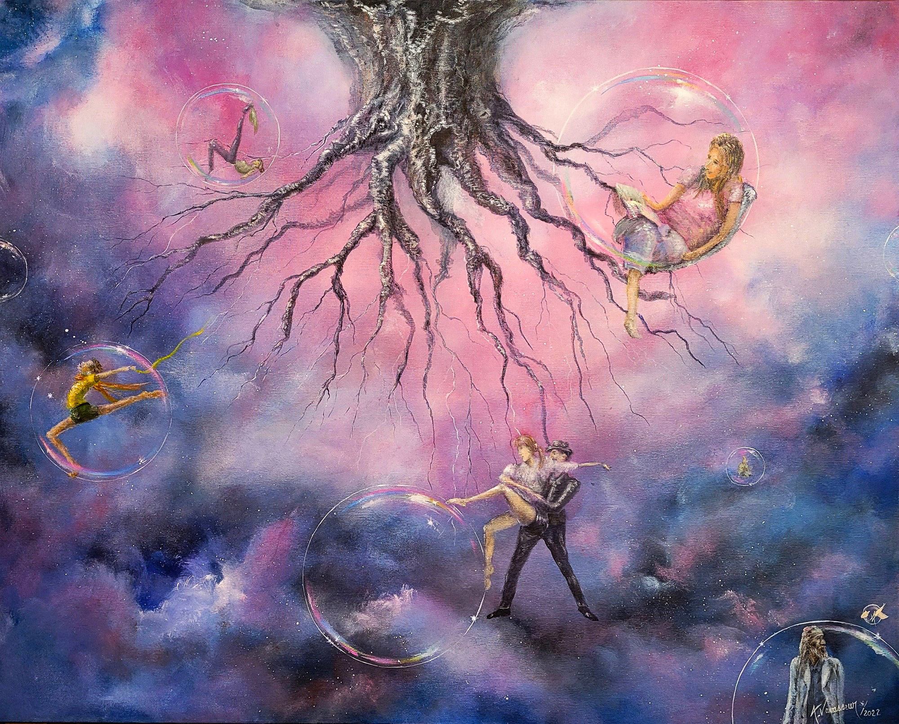

Portfolio
Biography
Exhibitions
Contact

Annick
Vavasseur

Paysage intérieur I (2016)
Acrylic on canvas

Back Home (2025)
Acrylic on canvas

L’île aux Dragons (2017)
Acrylic on canvas

De l’autre côté (2025)
Acrylic on canvas

La Marée (2022)
Acrylic on canvas

L’Ailleurs ici (2022)
Acrylic on canvas